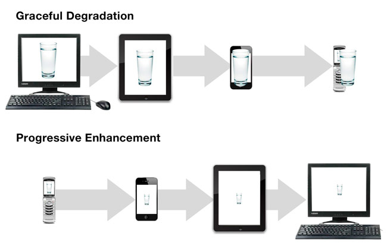
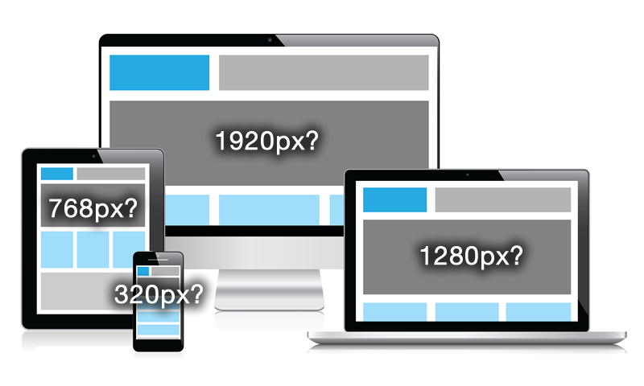

Introduction
- The Web has always been Responsive
- The superpower of the Web is its Ubiquity
- People use mobile Web the same way they use desktop sites
- It just has to be usable
Ubiquity
- "On the Go" is still true
- 76% access mobile while waiting in line
- 79% people using their smartphones in stores
- 39% access mobile web while pooping
Responsive Design Strategies

Responsive Design Strategies
Mobile Last
- Graceful Degradation
- Build the full experience first
- Start from the most capable device
- Hide/Remove non-critical elements
Mobile First
- Progressive Enhancement
- Build the minimal experience first
- Start from the least capable device
- Add new elements to enrich the minimal version
What are the Breakpoints?

Future Friendly
The best way to be future friendly is to be backwards compatible.
— Jeremy Keith
Content First
- Build from the content out, not from the device in
- Focus on the content
- Progressive Enhancement
- Device agnostic
- Breakpoints designed based on content
Adaptative Design
It's not only about screen sizes...
- Performance
- Feature detection
- Conditional loading
- Platform optimization
- And what the future will bring...
The Future Was Yesterday
- Environment conditions
- Input detection
- Geolocation
- Screen colors
- Low connection speed or low battery detection
Carousels
- You probably don't need one
- Carousels are complex UI elements
- Auto rotation takes control from the user
- They create banner blindness
- Extra requests from images and JavaScript
- Loads content that is going to be ignored
- Galleries can offer better usability
- A/B testing can lead to better results
But If You Must...
- Disable auto rotation
- Provide clear navigation, not only a bunch of dots
- Thumbnails are a good idea
- Suggest the existence of more content
- Load only what you need
- Limit the number of slides
- Keep the content focused
- Touch is an enhancement, not a feature
Additional Tips
- Don't over-complicate already existing UI components
- Make navigation accessible, but keep it out of the user's face
- Scroll through a singular content type
- Load related/additional content upon request
- Include a quick access footer navigation
- Provide a 'back to top' link
Recap!
- Focus on content
- Be future friendly
- Progressive enhancement
- Design for accessibility
- Design for performance